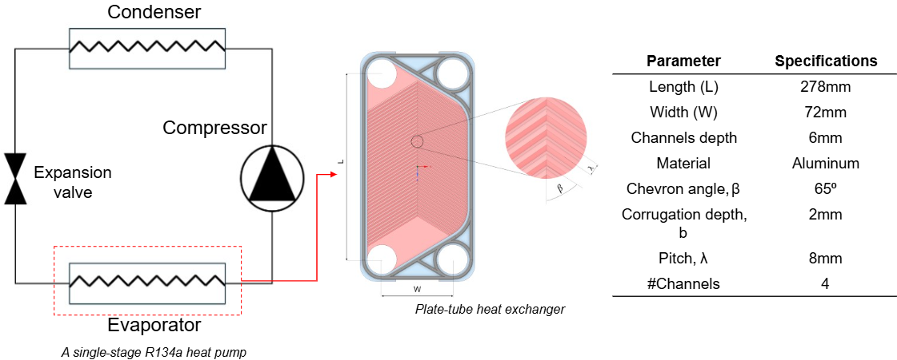
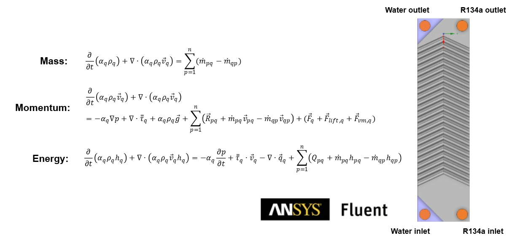

Introduction
This project introduces a machine-learning framework to develop digital twins of evaporators—critical components in heat pump systems. A plate-tube evaporator using R134a refrigerant is modeled within a single-stage heat pump that recovers heat from wastewater.
The approach combines high-fidelity unsteady CFD simulations with nonlinear regression to capture transient heat transfer behavior. Five independent variables are considered: refrigerant and water inlet velocities and temperatures, and evaporation pressure. The model targets three key outputs: heat transfer coefficients on both fluid sides and the refrigerant outlet dryness fraction.
Training data is generated using Latin Hypercube Sampling across the input space, with each case solved using RANS equations coupled with the Volume of Fluid (VOF) method to capture phase change in the 3D domain. Gaussian Process Regression models are then trained on this dataset to create accurate, time-resolved surrogate models representing the system’s dynamic behavior.
Methodology
In system development, heat transfer processes in heat pump components are often represented by simplified governing equations, empirical correlations, or case-specific formulations, which limits their ability to capture detailed component-level physics. To overcome this limitation, we propose a digital twin framework that integrates high-fidelity simulation with machine learning (ML). The framework defines the operating space of the heat pump using Latin Hypercube Sampling across varying dynamic operating conditions (inlet properties of water and refrigerant), generates a dataset through detailed multi-phase CFD simulations, and extracts key parameters such as vapor fraction and refrigerant/water-side heat transfer coefficients at each time step. ML models are then trained on this dataset and embedded into the digital twin, enabling fast and accurate prediction of local heat transfer phenomena across the full operating space. This approach bridges the gap between traditional low-fidelity formulations and computationally expensive CFD, combining accuracy with computational efficiency.

Step 1 – Physical Model
The physical model represents a plate-tube evaporator with R134a and water flow domains. Boundary conditions reflect realistic inlet and outlet conditions under varying operating scenarios.
Step 2 – Data Sampling
Latin Hypercube Sampling is used to span the design space efficiently, covering a wide range of inlet velocities, temperatures, and evaporation pressures for transient operation.
Step 3 – Data Generation
The database was generated under varying input conditions using Ansys Fluent, by solving 3D unsteady RANS equations coupled with the Volume of Fluid (VOF) method.
Step 4 – Data Reduction
Heat transfer coefficients in both the water and refrigerant domains, as well as the refrigerant vapor quality at the outlet, were calculated over a 20-second evaporator operation. A time step of 0.25 s was used, and the CFD database was reduced to include only the relevant input and output parameters, with the input parameters representing dynamically varying inlet conditions of the evaporator.
Step 5 – Data Regression
Gaussian Process Regression was selected to find optimal pattern between input and output parameters for each time step of the system operation.
Step 6 – Digital Twin
Each regression model represents digital twin i.e., surrogate models of the output parameters for a given time step of the operation.
Results
The heat transfer processes governing the dynamic operation of the evaporator were modeled using high-fidelity data combined with machine learning. Machine learning models were developed for key objective functions, such as the heat transfer coefficient and vapor dryness fraction, at selected time steps, as demonstrated below.